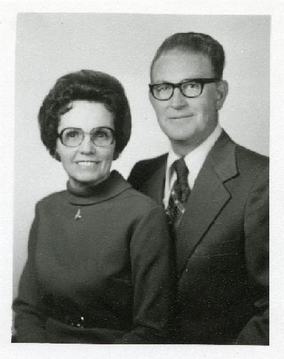
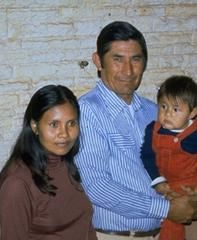

The Conversion of Walter Flores
A Nivaclé Indian
By Mearl Kay Bair

This impression led me to eventually find Walter and make friends with him. This I did over the three year period of our stay in Paraguay. Walter’s work would take him out in the Chaco for about three months or so each trip, working with these people, before returning back to Asuncion. This he repeated as his work permitted. I myself was extremely busy with my various responsibilities of running the Mission. Our several visits were by chance, and were spaced out over my time in Paraguay. We had some very interesting, special visits. I would explain some of the principles of the gospel, and he would share many things about his people. We developed a very special, friendly relationship over this time.
In May of 1980, as I approached the end of my three-year assignment in Paraguay, I realized that I must assign two of my best missionaries to take over the task of teaching Walter and his family, and bring them into the Church. Acting upon the spirit, I took Elder Ricky Loynd (whose companion was Elder Bruce Blosil) to meet Walter Flores. Walter responded that he would be happy to have these two Elders come into their home and teach them the gospel, which they did. At that time, I had no concept of what was soon to happen after Walter’s conversion, to bring many of the people of the Nivacle Tribe into the Church. Over 200 people were baptized in a matter of a few months. My wife LaPriel and I left Paraguay in the first week of July, 1980 to return to our home, leaving President Gerald B. Quinn in charge of the mission.
After their first full gospel discussion, Walter committed to his wife that he had smoked his last cigarette. When they attended a baptism in the Moroni chapel, his wife told him she wanted to be baptized the following Sunday, and Walter told her that he was also preparing.

The aboriginal tribes of Paraguay live in the remote areas of the Chaco and have very little social contact with other facets of life in Paraguay. These people are divided into from seventeen to twenty-two different Indian tribes, with each tribe having their own language. The exact number of distinct tribes and tribal lands cannot be exactly determined. There are some tribes who speak a common language, who live near or in-between other tribes, who have probably fallen away from one of the principal tribes. The Nivacle tribe is one of the principal identified groups with their own language and lands. Many of these tribes have beliefs that tie into the teachings of the Book of Mormon era.
Elder Rex D. Pinegar of the Seventy told me of the following experience he had with Walter Flores. Elder Pinegar was traveling through South America with a few hours stopover at Asuncion. He drove into the mission office to visit for a short time. When he returned to the airport to continue his flight, the lady at the desk examined his papers and told him they were not in order, and he could not board this flight. Seeing that it was impossible to board the plane, he returned to the mission office to find a solution to his flight problem. While he waited, Walter Flores arrived at the mission office and told Elder Pinegar, “I am sorry my prayers caused you to miss your flight. I so wanted to share an experience I recently had out in the Chaco.”
Walter told Elder Pinegar that he had found three tribes in the Chaco who were governed by three men, who were counseled by a group of twelve men. On a subsequent visit, Walter took his triple combination book to teach these three Chiefs some things from the Book of Mormon. As he opened up the book, it opened up in error to the facsimile number two in the Book of Abraham. When the three Chiefs saw this symbol, they said, “Where did you get that? It is ours, and you will not understand what it means until you know our history.”
Elder Pinegar also told me what Walter had shared with him, of an experience Walter had with his father long before his baptism, and before Walter met me. Walter traveled to the Chaco to visit with his father, knowing that he would probably not see him again. He died at age 110. The last time Walter saw him, his father told him: “This will be a final farewell. When you return again, you will not find me here. You are going to meet some people. Do not resist them. My salvation depends upon you, together with the salvation of a people who also wait upon you.”
That was the last time Walter saw his father. He died while Walter was traveling. Elder Pinegar told me that when Walter first met me, he knew I was the one who his father had spoken of. Walter was able to go to the Sao Paulo Temple and do the work for his parents.
Before the conversion of these Nivacle people, some important events happened to this tribe and their homeland at Mistolar. About three decades prior, a large part of the Nivacle people left their homeland and traveled a long way to a part of the Chaco where the German Mennonites had tamed the land and raised good crops. The Nivacle worked on the farms there to make a better living. Some joined the Mennonite church. The German people promised them that they could have land of their own, which some of them never received. This was discouraging to those Nivacle.
Walter, Elder Loynd, and Elder Blosil were searching for ways to carry the gospel to the Chaco. Ten days after Walter’s baptism, they learned that a group of Nivacle were about to leave the Mennonite colonies and return to their homeland, Mistolar, near the Pilcomayo River. Walter and the elders made multiple trips to Mistolar, leading to the baptism of 139 on December 4, then 22 on December 25, and 45 on April 1. Most in the community were faithful members. They typically had over one hundred percent attendance at sacrament meetings. They built a chapel themselves with some materials from Asuncion. It was a miracle.
Elder Ted E. Brewerton of the Seventy had a strong desire to visit these people, which he did in 1990, ten years after the beginning of the church in Mistolar. They were recovering from a severe flood of the Pilcomayo River. Elder Brewerton asked the Branch President to assign the prayers to some of the members for the evening meeting. A sister gave the opening prayer. Her prayer is typical of the faith of these people. She said, “Father we have lost our beautiful chapel in the flood, we have lost our clothing; we have no homes to live in, we have no food, we have no materials to rebuild anything, we have to walk ten kilometers to hunt for dirty water from the river, without even a bucket. But even so, we wish to express our gratitude for the good health we have, for being happy, and to be members of Thy church. Father, we wish for You to know, that whatever comes to pass, we will continue being worthy, strong and faithful to the covenants we made with Thee when we were baptized.”
What a wonderful people. Many have gone to the Temple. Many young men have filled missions. Truly they are a gem in the eyes of our Father in Heaven.
A Side Note
When LaPriel and I arrived in Paraguay in 1977, there were no temples in all of South America. Twenty five years later, with the building of the Paraguayan Temple, there were thirteen temples serving these people. We were privileged to attend the dedication of the Sao Paulo Temple, the first built, and the Paraguayan Temple, the thirteenth one built. In 1977 we had a membership in Paraguay of 1400 people. When the Paraguayan Temple was built, it served well over 50,000 members in Paraguay. In between these years, we were privileged to spend a year in Guatemala, teaching these people how to do their genealogy, in readiness for their Temple, as it was being built. We spent three years living and serving on the grounds of the Mexico City Temple, as Director of the MTC, and Director of the Visitor Center. These were precious years for us.
At the dedication of the Paraguayan temple, Author Nestor Curbelo recorded the following: “President Mearl Kay Bair was called upon by President Hinckley to bear his testimony (without prior notification) saying: We will now hear a testimony from President Mearl Kay Bair, he is the one who started all of this.” I spoke of three Temples we needed to purify: our body as a temple, our home should be a temple, and the House of the Lord is a Temple. “More than twenty-five years have passed away since we came here. The people of Paraguay have always been in our hearts. We always knew there would be a temple here, but we did not know when. Now, in attending the dedication here, words cannot describe the marvelous spirit we have felt. The Temple will bless all of the Nation of Paraguay, in a way we are not able to now understand.”